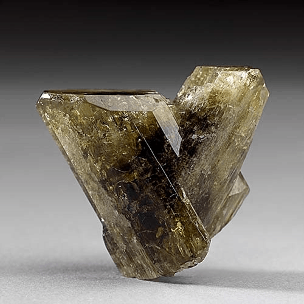
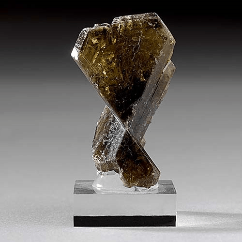

Chrysoberyl - BeAl2O4
Oxides



Habit: Crystals usually tabular, sometimes stout prismatic, prominently striated and twinned. Various shades of green, yellow, brownish to greenish-black; can have dramatic changes of color in different types of lighting (alexandrite). Transparent to translucent, may be opaque and chatoyant; vitreous Luster.
Environment: Occurs in Granites and granitic Pegmatites, although alexandrites are found in mica schists.
Etymology: From the Greek for golden and beryl (a misnomer)